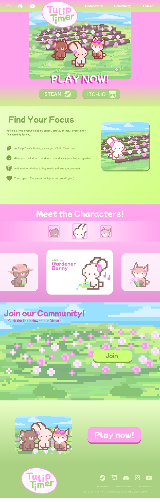
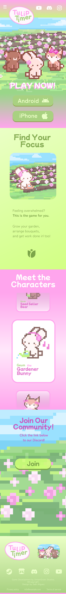

Website Design for "TulipTimer" Game
Here's the design for TulipTimer, a cute focus app centered around gardening and community.
Challenge: Design a website that promotes equity.
Solution: Design a website for game meant to help students focus and manage their tasks. The target audience was women in highschool and college so there's an incorporation of cute, pastel color schemes, an emphasis video game aesthetics using pixel art to cater to a generation of gamers, and easy-to-find downloading options for the game.
Desktop Version

Mobile Version
